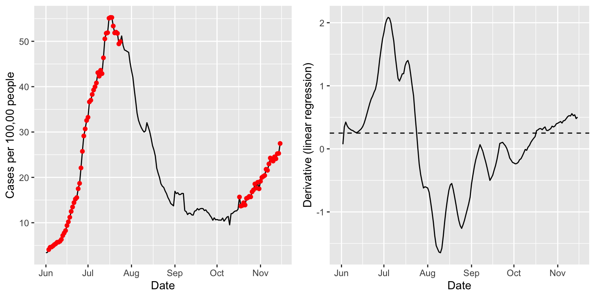
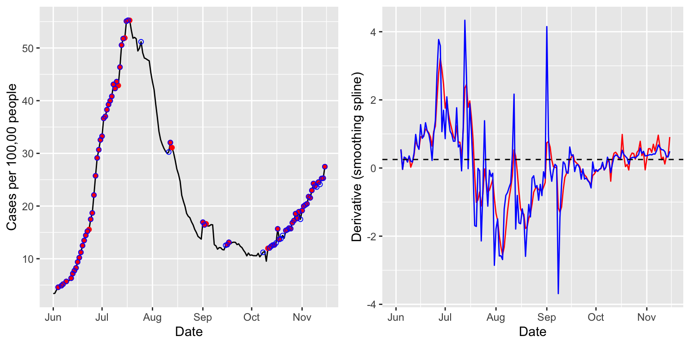
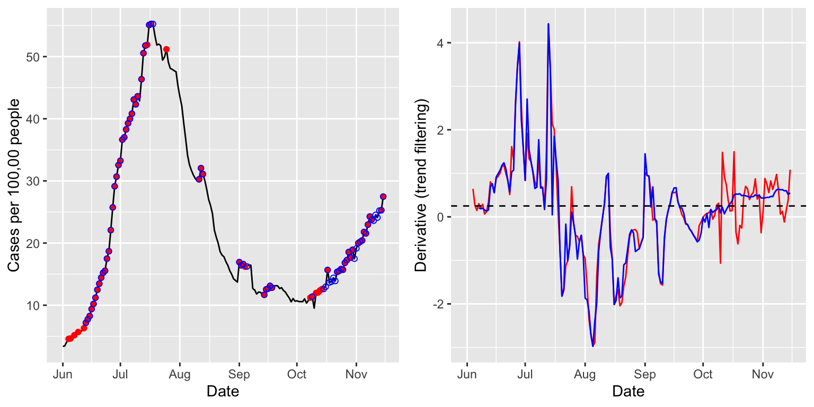

In this vignette, we’ll take a look at estimating derivatives of signals using the estimate_deriv() function. We’ll again demonstrate this functionality on state-level COVID-19 case rates, smoothed via 7-day trailing averages, from the USAFacts data source.
library(covidcast)
## We encourage COVIDcast API users to register on our mailing list:
## https://lists.andrew.cmu.edu/mailman/listinfo/delphi-covidcast-api
## We'll send announcements about new data sources, package updates,
## server maintenance, and new features.start_day <- "2020-06-01" end_day <- "2020-11-15" geo_values <- c("ca", "fl", "ny", "tx") case_rates <- suppressMessages( covidcast_signal(data_source = "usa-facts", signal = "confirmed_7dav_incidence_prop", start_day = start_day, end_day = end_day, geo_type = "state", geo_values = geo_values)) summary(case_rates)
## A `covidcast_signal` data frame with 672 rows and 9 columns.
##
## data_source : usa-facts
## signal : confirmed_7dav_incidence_prop
## geo_type : state
##
## first date : 2020-06-01
## last date : 2020-11-15
## median number of geo_values per day : 4The function for estimating derivatives is called estimate_deriv(), and (aside from a covidcast_signal data frame) takes two primary arguments: method, indicating the method to use for derivative estimation; and n indicating the trailing sample size (number of days) to use in training the given method. Here we use method = "lin", the default, which uses the slope from a simple linear regression, and n = 14, also the default.
library(modeltools) library(dplyr) case_rates <- estimate_deriv(case_rates, method = "lin", n = 14) case_rates %>% arrange(geo_value) %>% select(geo_value, time_value, value, deriv)
## # A tibble: 672 x 4
## # Rowwise:
## geo_value time_value value deriv
## <chr> <date> <dbl> <dbl>
## 1 ca 2020-06-01 6.70 NA
## 2 ca 2020-06-02 6.39 -0.312
## 3 ca 2020-06-03 6.50 -0.102
## 4 ca 2020-06-04 6.86 0.0593
## 5 ca 2020-06-05 7.11 0.129
## 6 ca 2020-06-06 6.81 0.0874
## 7 ca 2020-06-07 6.74 0.0561
## 8 ca 2020-06-08 6.75 0.0393
## 9 ca 2020-06-09 6.99 0.0449
## 10 ca 2020-06-10 7.19 0.0561
## # … with 662 more rowsWe can see that a column deriv has been added to the output data frame, which contains the derivative estimates. Below we visualize these estimates in tandem with the signal itself. The red dots mark time points at which the derivative estimate exceeds a threshold (arbitrarily chosen) of 0.25. These seem to roughly but reasonably mark times of upswing in the underlying signal.
library(ggplot2) library(gridExtra) state = "fl" threshold = 0.25 p1 <- ggplot(case_rates %>% filter(geo_value == state), aes(x = time_value, y = value)) + geom_line() + geom_point(data = case_rates %>% filter(geo_value == state, deriv >= threshold), aes(x = time_value, y = value), color = "red") + labs(x = "Date", y = "Cases per 100,00 people") p2 <- ggplot(case_rates %>% filter(geo_value == state), aes(x = time_value, y = deriv)) + geom_line() + geom_hline(yintercept = threshold, linetype = 2) + labs(x = "Date", y = "Derivative (linear regression)") grid.arrange(p1, p2, nrow = 1)

Now we consider method = "ss", which uses a smoothing spline for the estimate of the derivative. That is, at each time point, we fit a natural cubic spline to the data from the trailing n days, and return the derivative of the underlying fitted spline at the current time as the estimate. Here we set n = 28, a bit higher sample size, and fit the spline in two ways: first, using a fixed degrees of freedom of 8; and second, using cross-validation to choose the amount of regularization (tuning parameter). This is accomplished by passing additional arguments to estimate_deriv(), which are in turn passed on to the underlying function it uses to fit smoothing splines, stats::smooth.spline(). Note that we also set a custom name for the output column with the estimated derivatives, via the col_name argument.
case_rates <- estimate_deriv(case_rates, method = "ss", n = 28, col_name = "deriv_ss1", df = 8) case_rates <- estimate_deriv(case_rates, method = "ss", n = 28, col_name = "deriv_ss2", cv = TRUE) p1 <- ggplot(case_rates %>% filter(geo_value == state), aes(x = time_value, y = value)) + geom_line() + geom_point(data = case_rates %>% filter(geo_value == state, deriv_ss1 >= threshold), aes(x = time_value, y = value), color = "red") + geom_point(data = case_rates %>% filter(geo_value == state, deriv_ss2 >= threshold), aes(x = time_value, y = value), color = "blue", shape = 21) + labs(x = "Date", y = "Cases per 100,00 people") p2 <- ggplot(case_rates %>% filter(geo_value == state), aes(x = time_value)) + geom_line(aes(y = deriv_ss1), color = "red") + geom_line(aes(y = deriv_ss2), color = "blue") + geom_hline(yintercept = threshold, linetype = 2) + labs(x = "Date", y = "Derivative (smoothing spline)") grid.arrange(p1, p2, nrow = 1)

The estimated derivates—in red for the smoothing spline with a fixed degrees of freedom of 8, and in blue for that tuned by cross-validation—appear less smooth than those above, from linear regression. Using cross-validation offers more adaptivity to the time-varying level of smoothness, as is apparent from comparing the red and blue derivative estimates in October and November.
Lastly we consider method = tf", which uses trend filtering for estimating the derivative. That is, at each time point, we fit a discrete spline of quadratic order to the data from the trailing n days, and return the discrete derivative of the underlying fitted spline at the current time as the estimate. As before, we fit the spline in two ways: first, using a fixed degrees of freedom of 8; and second, using cross-validation to choose the amount of regularization. Since the optimization here takes a while (it’s based on computing a full solution path
for the trend filtering problem, via the genlasso::trendfilter() function), we only compute derivatives for Florida.
case_rates_state <- case_rates %>% filter(geo_value == state) case_rates_state <- estimate_deriv(case_rates_state, method = "tf", n = 28, col_name = "deriv_tf1", df = 8) case_rates_state <- estimate_deriv(case_rates_state, method = "tf", n = 28, col_name = "deriv_tf2", cv = TRUE) p1 <- ggplot(case_rates_state, aes(x = time_value, y = value)) + geom_line() + geom_point(data = case_rates_state %>% filter(deriv_tf1 >= threshold), aes(x = time_value, y = value), color = "red") + geom_point(data = case_rates_state %>% filter(deriv_tf2 >= threshold), aes(x = time_value, y = value), color = "blue", shape = 21) + labs(x = "Date", y = "Cases per 100,00 people") p2 <- ggplot(case_rates_state, aes(x = time_value)) + geom_line(aes(y = deriv_tf1), color = "red") + geom_line(aes(y = deriv_tf2), color = "blue") + geom_hline(yintercept = threshold, linetype = 2) + labs(x = "Date", y = "Derivative (trend filtering)") grid.arrange(p1, p2, nrow = 1)
## Warning: Removed 3 row(s) containing missing values (geom_path).## Warning: Removed 6 row(s) containing missing values (geom_path).
The estimated derivates now appear a bit smoother than the last ones, from the smoothing spline methods. Again, using cross-validation offers a noticeable improvement in adapting to to the time-varying level of smoothness, as is very clear from the differences between red and blue derivative estimates in October and November.
In the call to estimate_deriv(), we can set keep_obj = TRUE to keep around a second column with the fitted model objects. For example, here, we can look at the p-values associated with the estimated slopes from lsfit().
case_rates <- estimate_deriv(case_rates, method = "lin", n = 14, keep_obj = TRUE) class(case_rates$deriv_obj)
## [1] "list"ls.print(case_rates$deriv_obj[[7]])
## Residual Standard Error=0.224
## R-Square=0.2598
## F-statistic (df=1, 5)=1.7552
## p-value=0.2425
##
## Estimate Std.Err t-value Pr(>|t|)
## Intercept -1026.3201 779.7444 -1.3162 0.2452
## X 0.0561 0.0423 1.3249 0.2425case_rates <- case_rates %>% rowwise() %>% mutate(p_value = quiet( tryCatch(ls.print(deriv_obj)$coef.table[[1]][2,"Pr(>|t|)"], error = function(e) NA))) case_rates %>% arrange(geo_value) %>% select(geo_value, time_value, value, deriv, deriv_obj, p_value)
## # A tibble: 672 x 6
## # Rowwise:
## geo_value time_value value deriv deriv_obj p_value
## <chr> <date> <dbl> <dbl> <list> <dbl>
## 1 ca 2020-06-01 6.70 NA <lgl [1]> NA
## 2 ca 2020-06-02 6.39 -0.312 <named list [4]> NaN
## 3 ca 2020-06-03 6.50 -0.102 <named list [4]> 0.555
## 4 ca 2020-06-04 6.86 0.0593 <named list [4]> 0.638
## 5 ca 2020-06-05 7.11 0.129 <named list [4]> 0.180
## 6 ca 2020-06-06 6.81 0.0874 <named list [4]> 0.182
## 7 ca 2020-06-07 6.74 0.0561 <named list [4]> 0.243
## 8 ca 2020-06-08 6.75 0.0393 <named list [4]> 0.278
## 9 ca 2020-06-09 6.99 0.0449 <named list [4]> 0.125
## 10 ca 2020-06-10 7.19 0.0561 <named list [4]> 0.0314
## # … with 662 more rows